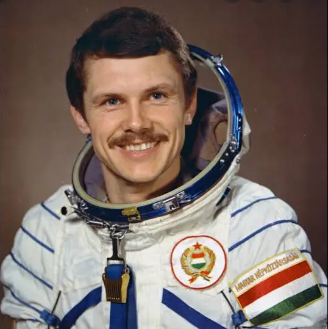

Az űrkutatásról
Az űrkutatás az emberiség egyik legizgalmasabb tudományos területe, amely az űr megismerésével foglalkozik. Segítségével jobban megérthetjük a Föld helyét a Világegyetemben, valamint az égitestek működését. Az űrkutatás nemcsak tudományos, hanem technológiai fejlődést is hoz, hiszen számos hétköznapi eszköz alapja űrkutatási fejlesztés Az űrkutatás fő területei a következők:
Az űrkutatás fő területei a következők:
- A műholdak segítségével megfigyeljük a Föld időjárását, felszínét és a klímaváltozást.
- Az űrszondák távoli bolygókat és holdakat vizsgálnak, például a Marsot.
- Az emberes űrrepülések célja az ember hosszú távú űrbeli életének kutatása.
Magyar űrhajósok
Farkas Bertalan

Kapu Tibor